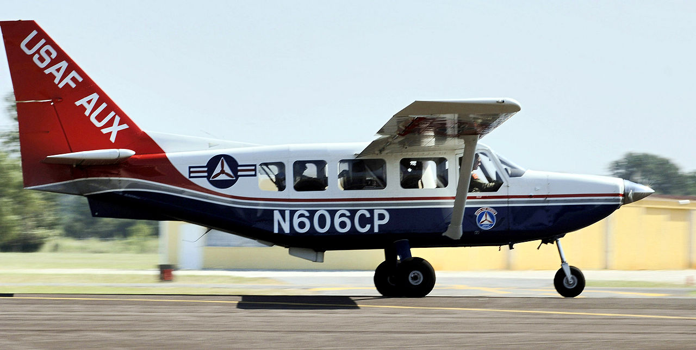
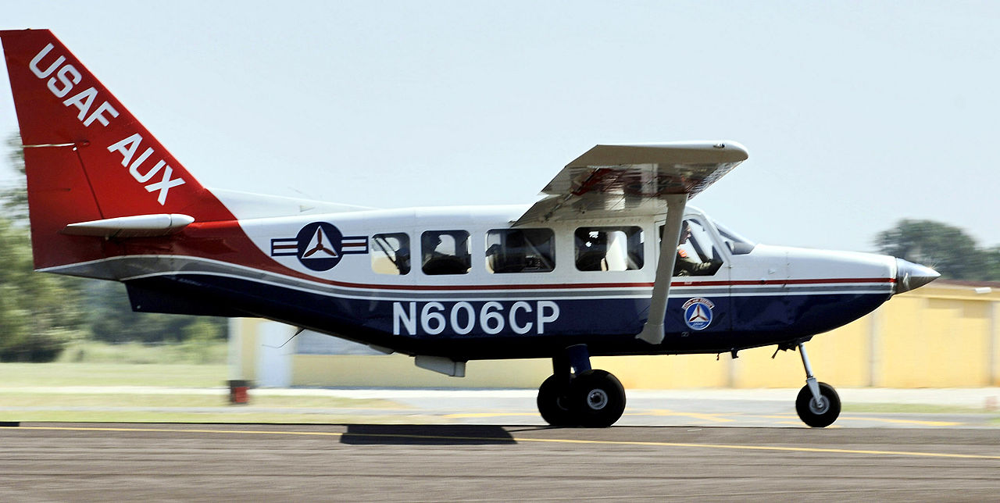

Skills
Our wide range of experiences has resulted in an impressive skill set.
JQuery JavaScript HTML5 CSS3
"Rabbit Tracker" and systems-dev.com were both developed using extensive JQuery, JavaScript, HTML5 and CSS3.
The result is a User Friendly, Responsive website that works from phones to desktops.
SysML/UML has been used on all programs to capture top level requirements and system design
SysML/UML provide an expressive language to capture all the elements of a system.
C/C++ were used for all real-time and near-real time image processing.
C/C++ provides access to powerful libraries such as OpenCV, ffmpeg, boost, OpenMP, Threaded Building Blocks, and more.
Remote Adaptable Perimeter Intrusion Detection System (RAPIDS)
RAPIDS was developed to provide a video sensor based intrusion detection, classification, and tracking cababilty.
The system was successfully demonstrated on intruder scenarios conducted at Bellow's Air Force Base. RAPIDS was comprised of Sensor Subsystems, consisting of a video camera and a local embedded Linux SBC processor that implemented image processing and detection algorithms in C/C++, and a Operator's Console implemented using a Windows PC running Java for the UI, tracking, and classification.
Airborne Real-time Cueing Hyperspectral Enhanced Reconnaissance (ARCHER)
The Airborne Real-time Cueing Hyperspectral Enhanced Reconnaissance, also known by the acronym ARCHER,
( see wikipedia) is an aerial imaging system that produces ground images far more detailed than plain sight or ordinary aerial photography can. It is the most sophisticated unclassified hyperspectral imaging system available, according to U.S. Government officials. ARCHER can automatically scan detailed imaging for a given signature of the object being sought (such as a missing aircraft), for abnormalities in the surrounding area, or for changes from previous recorded spectral signatures.
It has direct applications for search and rescue, counterdrug, disaster relief and impact assessment, and homeland security, and has been deployed by the Civil Air Patrol (CAP) in the United States on the Australian built Gippsland GA8 Airvan fixed-wing aircraft. CAP, the civilian auxiliary of the United States Air Force, is a volunteer education and public service non-profit organization that conducts aircraft search and rescue in the U.S.
The ARCHER processor was comprised of a ruggedized Windows PC and dedicated real-time multi-processor DSP hardware implemented via a plug-in PCI card. The Windows User Interface was written in C# while the hypersprectal image processing, primarily deployed on the DSP, was written in C/C++.
Airborne Intelligent Reconnassaince & Survelliance (AIRS)
The AIRS program targeted developing a real-time detect, classify, and track capability for small UAV's such as the RAVEN. AIRS algorithms were succesfully demonstrated on RAVEN imagery collected in Thailand.
Advanced Mobile Targeting
Advanced Mobile Targeting was a multi-year program to develop advanced autonomous search, detection, classification, and tracking algorithms using imaging sensors for deployment on UAVs using both real imagery and simulated UAV engagements (using high fidelity simulated imagery and UAV flight models). A patent was awarded based on the technologies developed under this program.
Real Time Massively Parallel Processor
The Real-Time Processor Navy’s Real-Time Processor which was developed for real-time exploitation of high-resolution hyper-spectral imagery in a military environment. It was a VxWorks system, comprised of 12 VME cards, 8 of which had 4 DSP processors each, for a total of 32 DSPs, communicating over a proprietary high speed bus. Obtaining optimal performance required careful distribution of the tasks amongst the processors taking into account bandwidth issues, and with particular need to ensure that cache thrashing was minimized. The RTP was flown by the Navy and demonstrated real time detection performance. Responsibilities included System requirements, hardware design and software design, as well as detailed software engineering for the multi-processor DSP subsystem (‘C’ language). UML was used to capture design elements at both the system level and detail software level.


 
